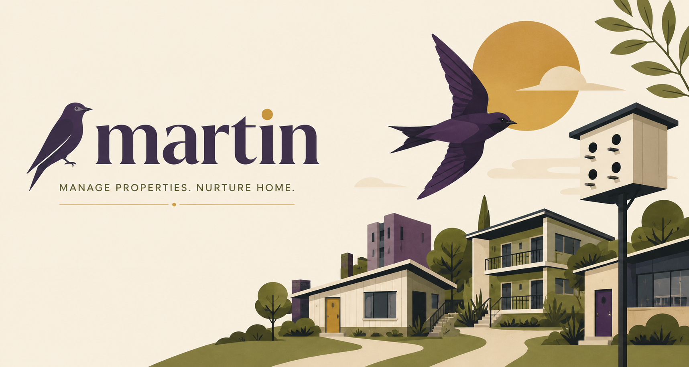

For Martin and Martin Home, on iPhone and Android.
Martin is property management for people who own the buildings and often hold the wrench too: time on the clock, repairs and their paper trail, photos, materials, expenses, and every lease filed with the home it covers. Martin Home is the resident's side: report a problem with photos, follow what happens, and talk to the people fixing it.
Both apps talk to a Martin server that your operator hosts. There is no Martin cloud, no account with us, and nothing phones home.
Martin has no sign-up page by design. Every account starts from a single-use invite issued by the person who runs your buildings, on their server. To get in you need two things from them:
If you don't have an invite, ask your property manager or operator — we cannot create accounts on a server we don't run.
Your records live on your operator's server and on your phone. The apps collect nothing for us and share nothing with third parties. Each Martin server publishes its own privacy policy at /privacy on its own address, so the policy that binds you is the one your server serves. Account deletion and data questions go to your operator, who holds the data.
Does it work offline? Yes. A basement or a dead zone changes nothing: work is recorded on the phone the moment it happens and reaches the server whenever the phone next can.
I forgot my password. Use the reset link on the sign-in screen; the email comes from your operator's server. If it never arrives, your operator can reissue an invite.
The app says it cannot reach the server. Check the server address with your operator, and that you typed any port exactly. Work you record while unreachable is kept and sent later.
We read everything and usually answer within two business days. Include the app (Martin or Martin Home), your platform, and what you saw.